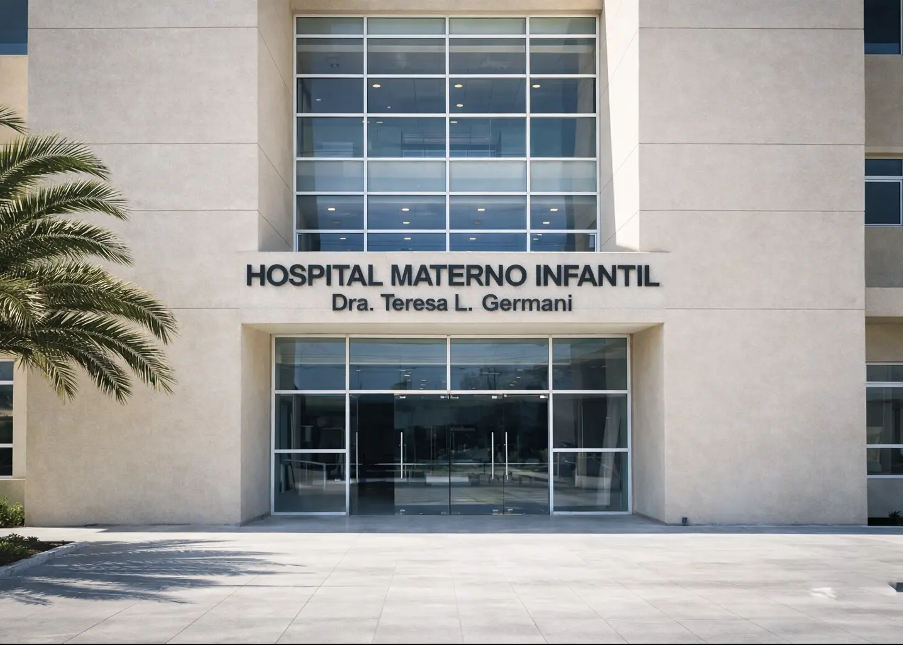
Diseño e ingeniería de alta complejidad para hospitales, data centers, edificios corporativos, centros comerciales e infraestructura crítica, con el respaldo de cuatro décadas de obra ejecutada.
Ingeniería, cálculo y documentación técnica del sistema de climatización.
Preventivo, correctivo y monitoreo para que nada se pare.
Supervisión y dirección técnica en sitio, hasta la puesta en marcha.
Detectamos fallas de diseño, riesgos normativos y mejoras en proyectos existentes.
Una muestra de nuestra trayectoria en los entornos más exigentes

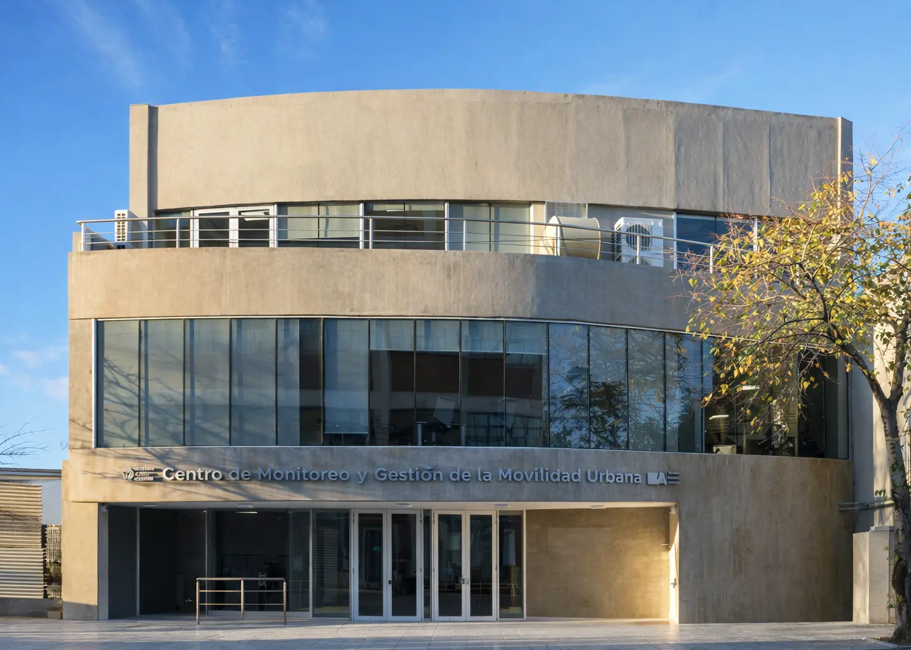
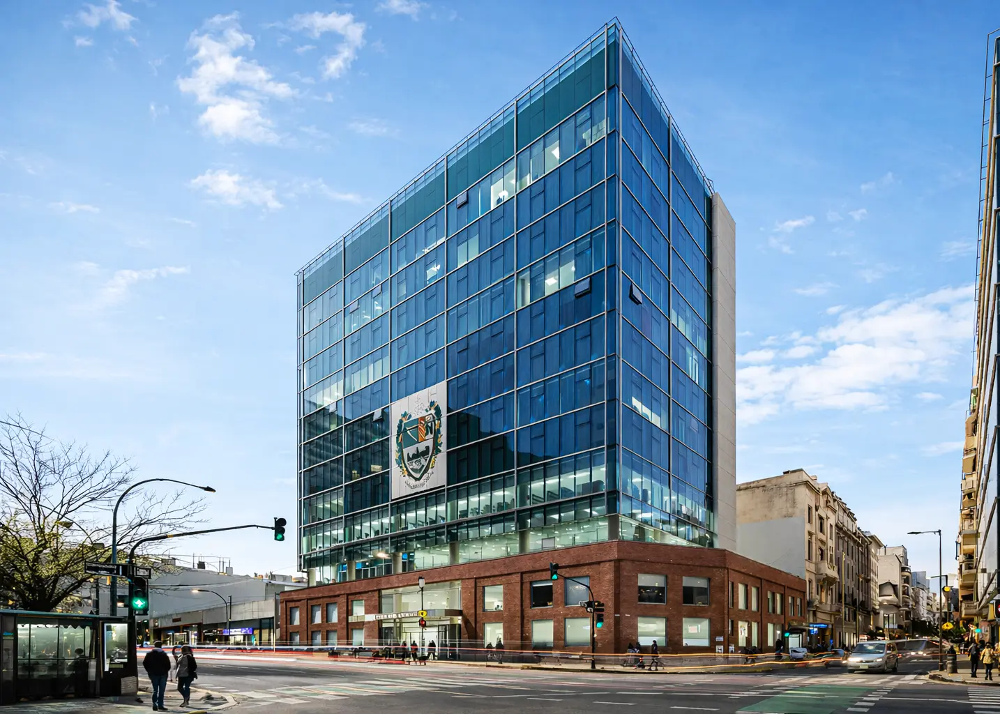
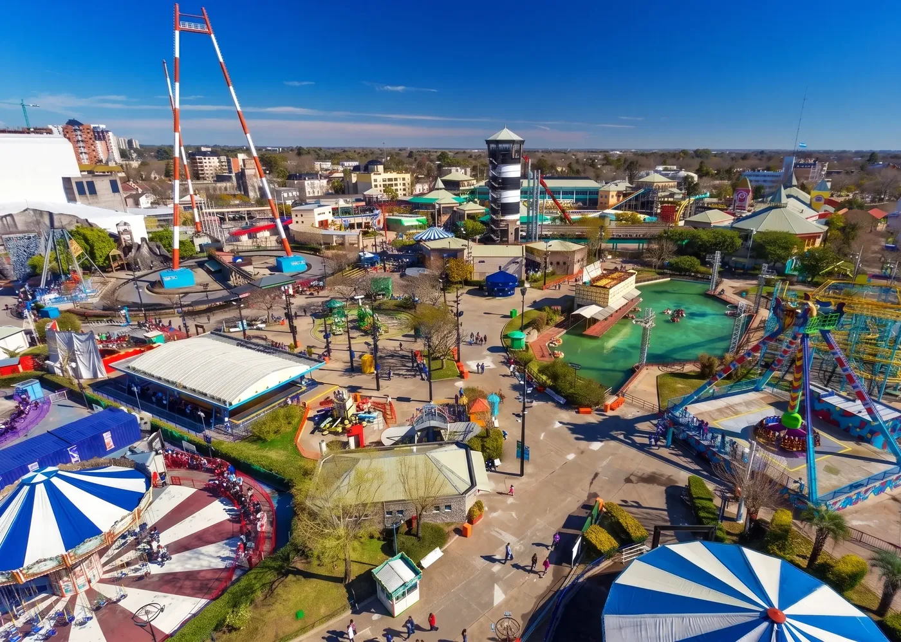
Empresas que confiaron en nosotros
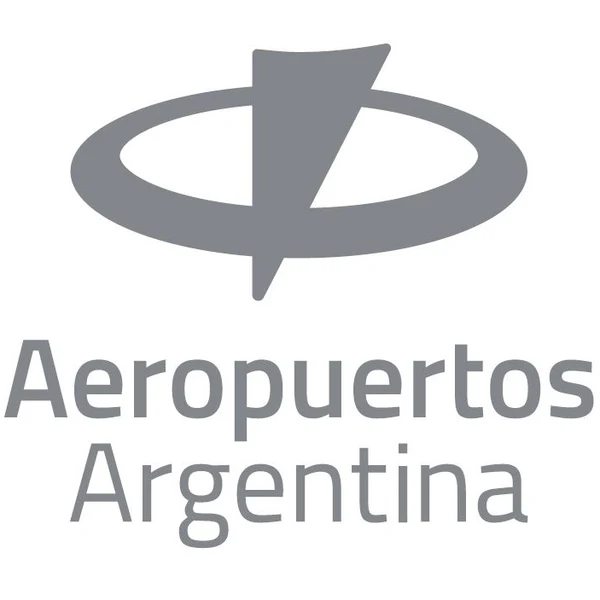
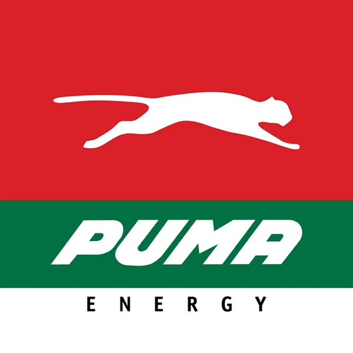
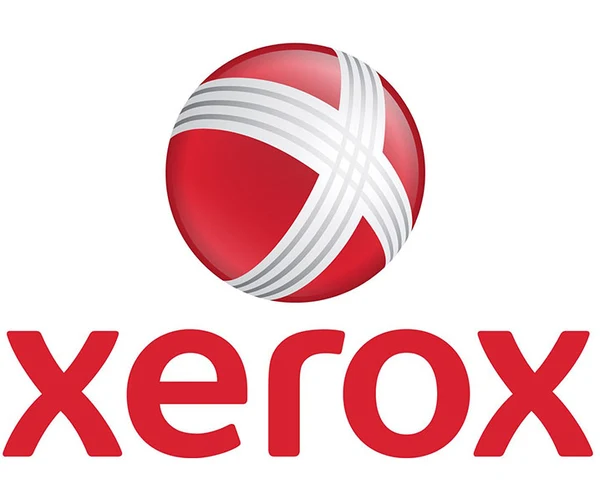
Ambientes críticos como quirófanos, áreas limpias y laboratorios: presión diferencial, filtrado HEPA y continuidad de servicio bajo norma sanitaria.
Refrigeración de precisión: control de temperatura y humedad, redundancia y operación 24/7 sin ventanas de falla.
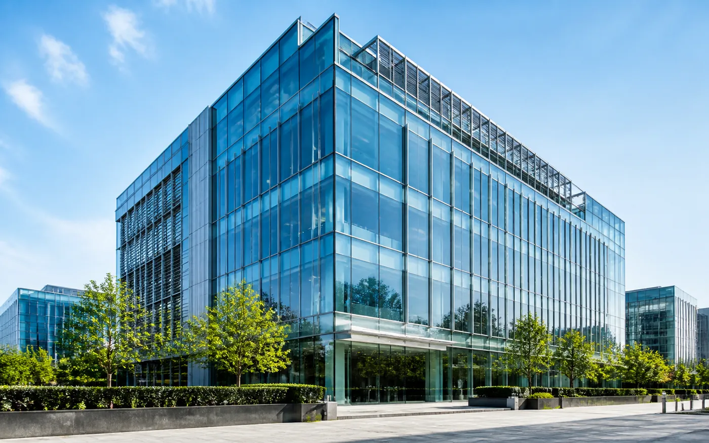
Torres y oficinas de alto estándar con sistemas VRF/VRV, agua helada y BMS integrados.
Climatización de proceso: ventilación y sistemas a medida para plantas e instalaciones industriales.
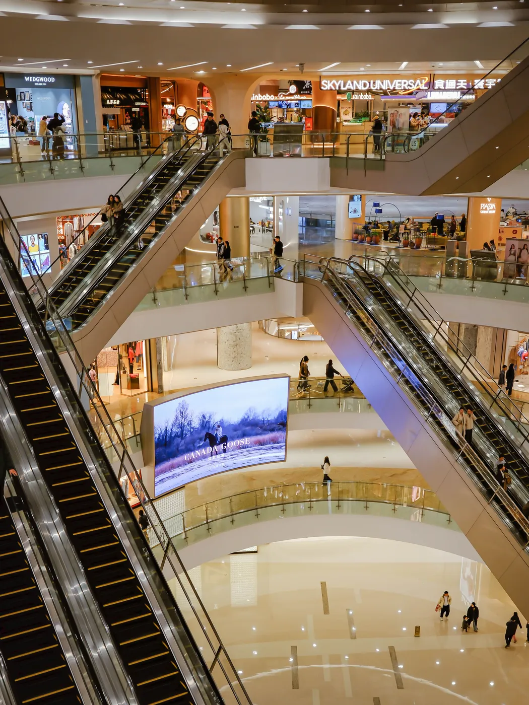
Grandes superficies como shoppings, tiendas, cines y salas de espectáculos. Confort estable en espacios de alta ocupación y renovación de aire para el público.
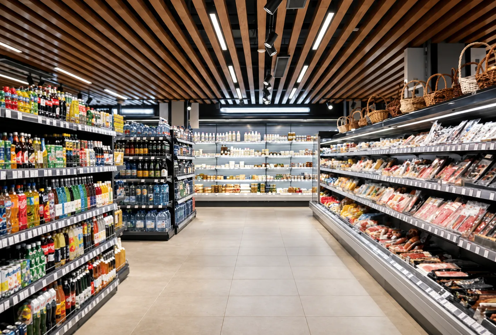
Confort y cadena de frío: temperatura controlada en el salón y donde el producto lo exige (zonas de frío, depósitos y medicamentos que no pueden salirse de rango).
Cocinas y salones: extracción de humos, reposición de aire y confort en el salón, conforme a normativa.
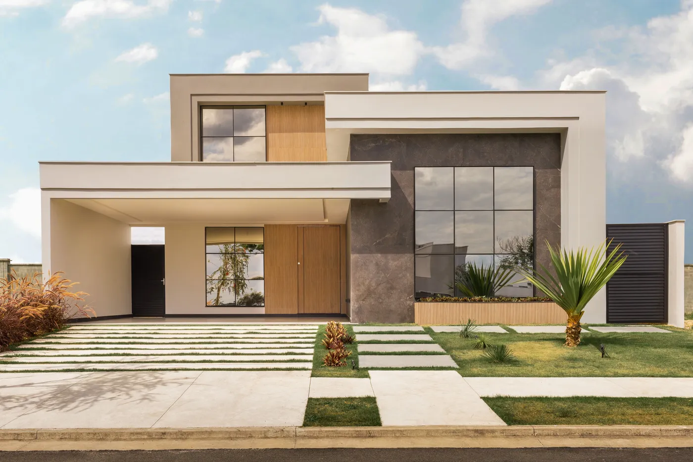
Climatización silenciosa y eficiente para viviendas, departamentos y edificios residenciales.
Despejá dudas con un ingeniero antes de invertir. Sin cargo ni compromiso.
Pedir auditoría gratuitaTu proyecto, el estado de tus equipos o qué necesitás comprar.
Un ingeniero audita la instalación y analiza tus dudas
Qué equipos conviene, riesgos a cubrir y oportunidades de mejora.
El Hospital Materno Infantil Teresa Germani incorporó climatización integral en internación, neonatología, salas de partos y áreas comunes, junto con quirófanos y unidades farmacológicas: espacios donde el sistema de climatización es parte directa de la bioseguridad del establecimiento, no solo del confort térmico.
Los quirófanos y áreas limpias operan bajo normativa sanitaria estricta en materia de presión diferencial, filtrado de aire y continuidad de servicio: el sistema no puede fallar ni comprometer la asepsia del espacio. El diseño exigió balance térmico local por local y mediciones de caudal en obra sobre cada sala.
Sistema central de agua helada con dos enfriadoras TROX-Aermec, fan coils Heatcraft en internación y UMAs TROX en áreas comunes, más seis unidades de tratamiento de aire farmacológicas TKZ dedicadas para quirófanos y áreas limpias, con triple etapa de filtrado y control de presión diferencial.
Con USD 500 millones proyectados en infraestructura hospitalaria en Paraguay para 2026, este caso es la referencia directa de cómo ElectroTerm puede operar bajo normativa sanitaria exigente.
Centro de monitoreo de tráfico urbano que opera de forma ininterrumpida las 24 horas, los 365 días del año: sala de control, sala de servidores, laboratorio técnico, oficinas y auditorio sobre 1.400 m² en tres plantas, donde la climatización sostiene a la vez el confort de los operadores y el equipamiento tecnológico.
En un entorno de operación crítica no existen ventanas de corte ni margen para fallas. Convivían además cargas muy dispares —sala de control de alta densidad, servidores y oficinas convencionales— que exigían independencia total entre zonas.
Sistemas VRF Gree zonificados por planta, con dos unidades de 22,4 kW en la sala de control y equipos de precisión tipo datacenter —con control de temperatura y humedad— dedicados a la sala de servidores, más cortinas de aire en accesos y presurización de escaleras. La ampliación del 2º piso se sumó luego sobre la misma arquitectura.
Es la referencia directa para infraestructura de operación crítica 24/7: salas de control, centros de monitoreo y entornos con equipamiento tecnológico sensible — la antesala natural de proyectos tipo data center.
La refuncionalización y puesta en valor del inmueble de la Embajada de la República del Paraguay en Buenos Aires —un edificio de 1920 legado al Estado paraguayo— lo transformó en su primer centro cultural en el exterior: biblioteca, sala de exposiciones, sala de turismo y despachos, en planta baja, dos pisos y terraza.
Integrar climatización moderna en un edificio patrimonial en restauración, conviviendo con la puesta en valor arquitectónica con mínimo impacto visual y estructural, y atender usos que van de exposiciones con 50 personas a despachos individuales.
Dos sistemas VRF Gree independientes con condensadoras compactas en terraza y unidades interiores seleccionadas ambiente por ambiente —cassettes en salas, murales en despachos—, con el mismo rigor de ingeniería de las obras de gran escala: balance térmico local por local y planos de ejecución propios.
Demuestra que la misma ingeniería se aplica con igual excelencia a obras de cualquier envergadura — y que ElectroTerm ya trabajó para el Estado paraguayo, en un edificio de su representación en Buenos Aires.
La sede de la Facultad de Medicina de la USAL es un edificio vertical sobre Av. Córdoba que combina aulas, laboratorios, biblioteca y oficinas con espacios de control ambiental crítico: un bioterio, un cuarto de cultivos y una morgue, cada uno con exigencias propias de temperatura, humedad y renovación de aire.
Convivir en un mismo edificio la climatización de confort de aulas y oficinas con entornos críticos donde temperatura, humedad y renovación de aire deben sostenerse sin interrupciones. El bioterio se diseñó bajo la guía internacional de cuidado de animales de laboratorio, con control automatizado dedicado.
Sistema VRV Daikin con recuperación de calor (Heat Recovery) para la climatización general —enfría y calienta zonas distintas en simultáneo— complementado con UMAs dedicadas de aire 100% exterior para bioterio, cuarto de cultivos y biblioteca, y presurización de cajas de escalera según normativa contra incendios.
Demuestra la capacidad de integrar confort y control ambiental crítico en un mismo edificio en altura: referencia directa para laboratorios, investigación y otros entornos de alta exigencia. Y a la vez, valida la ejecución en escala de aulas, oficinas y espacios corporativos de uso intensivo.
Tren de la Costa S.A. encargó la climatización del parque de diversiones más grande del país: restaurantes Remeros y Caribeño, locales comerciales de los edificios Feria y Puerto, auditorio Octógono, anfiteatro, circo, cabinas de peaje y edificio Vigía — 400 TR nominales más extracción mecánica en los sectores Puerto, Feria y Centro.
Un mismo predio con demandas térmicas y horarios de funcionamiento radicalmente distintos: desde un circo de 150 TR con picos de ocupación masiva hasta locales comerciales de 5 TR, pasando por gastronomía, espectáculos y oficinas.
Sistemas de expansión directa dimensionados sector por sector —circo 150 TR, gastronomía 40 TR, camarines 20 TR, diez locales comerciales de 5 a 10 TR— y oficinas administrativas con sistema VAV (caudal de aire variable) de 40 TR, con filtrado G4 en todo el parque.
La confianza escaló: el mismo cliente encargó luego las estaciones San Fernando, San Isidro, Anchorena y Libertador — un programa completo de ≈555 TR con un único aliado técnico. Exactamente el modelo de relación que propone este documento.